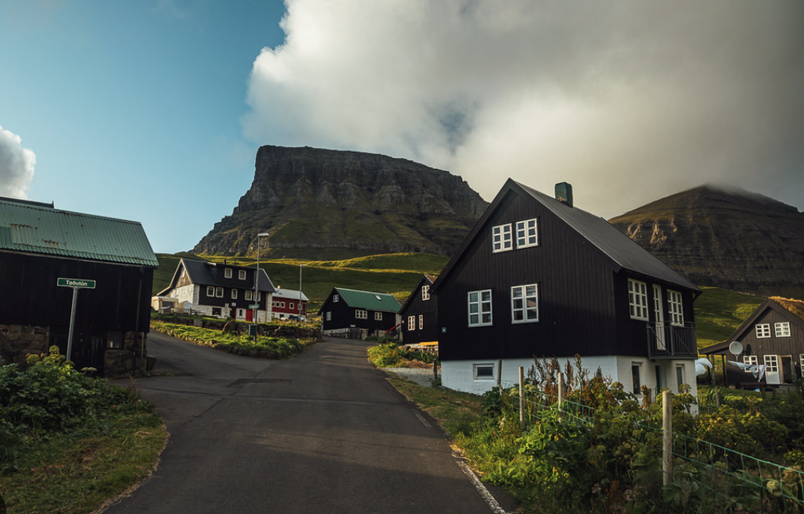
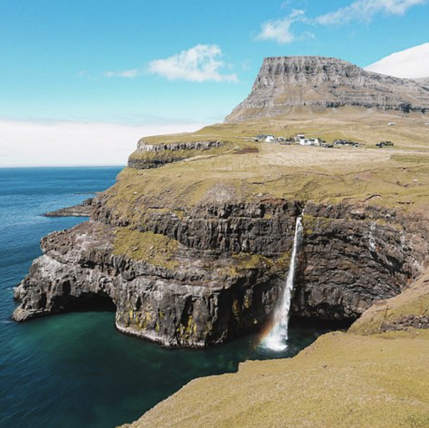
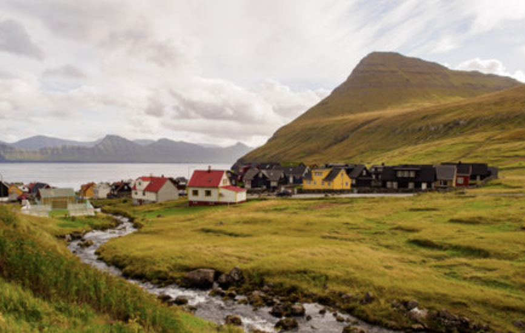

✈️
← Volver
GASADALUR
Gasadalur es un pequeño pueblo en las Islas Feroe rodeado de acantilados, niebla y cascadas que caen directo al océano Atlántico.
Clima
Cómo llegar
Experiencia
Explora Gasadalur usando los botones.


